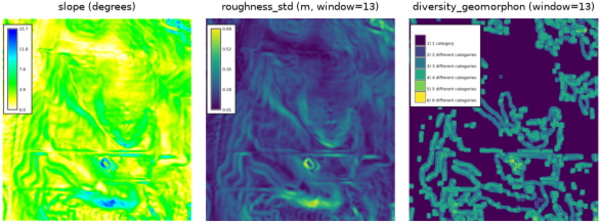

r.dem.stats computes terrain surface metrics from a DEM (or a DEM of Difference). The outputs are the predictor rasters used to model terrain-correlated DoD uncertainty and systematic bias, for example as inputs to r.dem.bias or as an uncertainty source for r.dem.errprop.
A single metric is selected per run through the metric option:
H' = -sum(p * log(p)) over category proportions in a window,
computed from a categorical input such as a geomorphon forms map. The
logarithm base is selected with log_base (e,
2, or 10; default e). With the
-e flag the matching Shannon evenness J = H' / log(S) is
also written as <output>_evenness.sigma = 1.4826 * median(|x - median(x)|) in a moving window. Use
a DoD raster as input to obtain a spatially varying DoD uncertainty
surface.The window must be an odd integer of at least 3 cells. Focal metrics use a Gaussian weighting whose falloff is derived from the window radius, matching the focal behavior used throughout the DoD workflow.
For diversity_shannon the input is expected to be categorical (integer
classes). A natural pairing is to first compute a geomorphon forms map and then
run r.dem.stats with metric=diversity_shannon on that
map.
Intermediate rasters are removed on exit. The tool honours the current
computational region and the --overwrite flag.
The commands below use the example scene built in the r.dem toolset manual, which is derived from the North Carolina sample dataset. Build it there first.
Derive the terrain predictors used by r.dem.bias method=regression and as diagnostic surfaces:
g.region raster=elev_lid792_1m
r.dem.stats input=elev_lid792_1m output=slope metric=slope
r.dem.stats input=elev_lid792_1m output=roughness \
metric=roughness_std window=13
r.dem.stats input=elev_lid792_1m output=landforms \
metric=diversity_geomorphon window=13
The slope metric is r.slope.aspect under the tool's own naming, so the two agree cell for cell.
metric=diversity_shannon needs a categorical map rather than an elevation surface, so derive the geomorphon forms first and run the metric on those. The -e flag adds the matching evenness raster:
r.geomorphon elevation=elev_lid792_1m forms=landform_classes \
search=7 flat=4
r.dem.stats -e input=landform_classes output=landform_diversity \
metric=diversity_shannon window=13

Corey T. White, Center for Geospatial Analytics, NC State University
{kind=link}